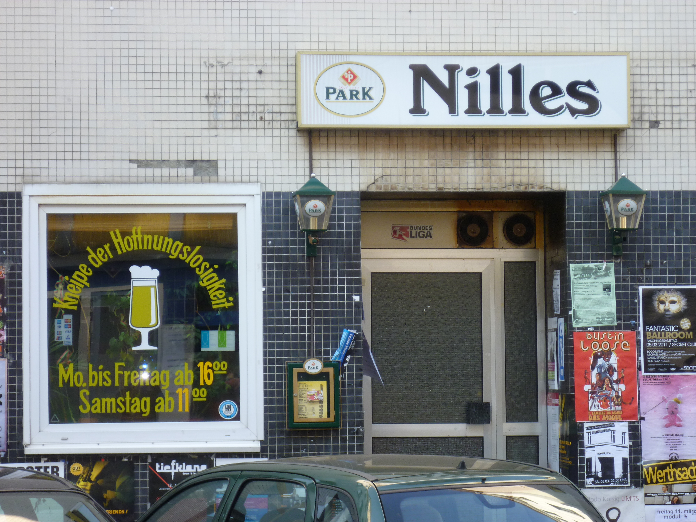
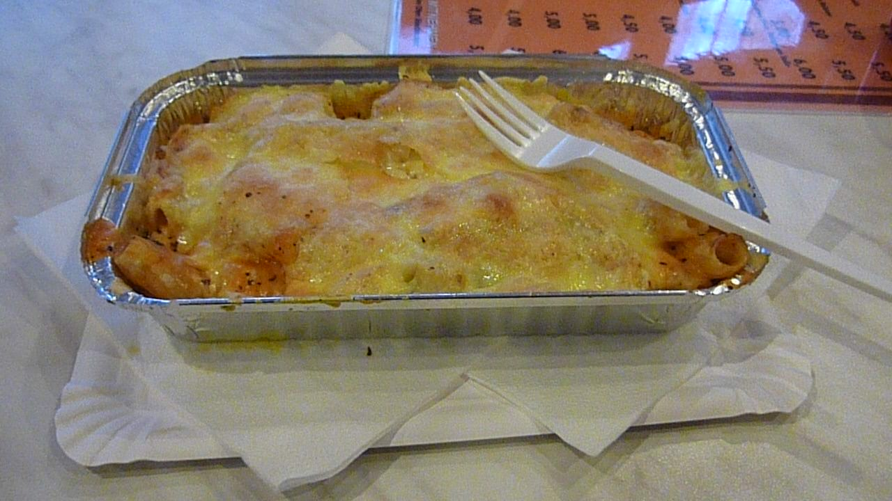

Saarbrücken für Slacker
Folge 1 von Hunter S. Heumanns Reiseberichten
Vergessen Sie Leipzig, vergessen Sie Dresden! Vergessen Sie all diese Bruchbuden, inklusive Magdeburg und Görlitz an der Neiße! Vergessen sie also all die ostdeutschen Städte, von denen ihre gescheiterten Akademikerfreunde erzählen, man könne sich dort für billiges Geld selbst verwirklichen!
Sie waren wohl noch nie in Saarbrücken, im west-westdeutschen Zonenrandgebiet. In der zukünftigen Trendstadt der Lebemenschen und Lumpenakademiker. Lassen Sie sich entführen ins Lyonerland.

Hinreise: Noch Gelinde ausgedrückt: Saarbrücken liegt nicht am Arsch der Welt, aber man kann ihn von dort aus ganz gut sehen. Daher ist die Reise auch kein Katzensprung. Vielleicht ist sie das dennoch, wenn man nicht in jeder größeren Stadt am Wegesrand ein Bierchen in der Bahnhofsschänke trinkt. Ich weiß es nicht. Auch auf Ex dauert dies viele Stunden. Reisen Sie daher am besten mit dem Auto oder lassen Sie, wenn Sie mit dem Zug unterwegs sind, die Idee, sich an schwäbisch-badischen Stammtischen entlang der Eisenbahnstrecke über Stuttgart 21 unterhalten zu wollen. Lassen Sie das wirklich!
Wie dem auch sei: Irgendwann sind Sie, nur mit zwei mal umsteigen und alles im Regionalverkehr, hoffentlich in Saarbrücken. Mit dem Auto war ich auch schon mal da, aber über Frankfurt-Bockenheim hat es noch länger gedauert. Es würde den Rahmen des Reiseberichtes sprengen, auch davon zu erzählen.
Sehenwürdigkeiten: Wer meine Reiseserie „Unterfrankens hässlichste Orte“ kennt, die oder der weiß, dass Abfuck und Ästhetik für mich eine Symbiose eingehen, die für andere schwer nachzuvollziehen ist. Daher bleibt München immer verabscheuungswürdig. Aber das ist eine andere Geschichte.
Die Saarbrückener Innenstadt besitzt einige sozial verödete Randbezirke, in denen sich Import-Export-Shops, Sportwettenlokale, Nacht- und Nacktbars aneinanderreihen. Irgendwo dazwischen wohnt der Freund, den ich besucht habe, in einer 16-köpfigen WG mit einem Klo und zwei Österreichern. Die vielen leerstehenden Geschäfte und Nettofilialen entfalten ein ostdeutsches Flair, das fast schon an Leipzig Connewitz erinnert und eigentlich jeden dazu einladen, sich selbst zu verwirklichen. Nicht verpassen dürfen Sie den Blick auf die wunderschöne Stadtautobahn, die direkt durch die Innenstadt an der Saar entlang führt. Tipp: Setzen Sie sich bei schönem Wetter an das gegenüberliegende Ufer der Saar. Vertreiben Sie sich die Zeit beim Zählen aller roten Autos, die innerhalb einer von Ihnen festgelegten Zeit auf der Autobahn vorbeifahren.
Land und Leute: Die Saarbrückener sind ein ehrliches aber widerspenstiges Völkchen. Gaststätten heißen „Kneipe zur Hoffnungslosigkeit“ (Bild siehe oben), aber auch „Zum kotzenden Kommunisten“. Man merkt: In Saarbrücken wird ihnen reiner Wein, Weißwein selbstverständlich, eingeschenkt. Der anarchische Charakterzug der Saarbrückener kommt dadurch zum Ausdruck, dass es mit Sicherheit kein Gesetz gibt, dass Spätis legitimiert, es aber dennoch Spätis gibt. Man hat ja in Saarbrücken eh nichts zu verlieren, dort drüben an der Saar. Diverse Getränkemärkte haben daher bis spät in die Nacht geöffnet.
Der Saardialekt klingt wie ein Schwabe, der einen Frosch verschluckt hat oder ein Bade, der versucht, einen Schwaben zu imitieren. Kurz gesagt: der Saardialekt klingt exakt wie Pfälzisch und ist auch exakt das Selbe.

Essen und Trinken: Saarbrücken wartet mit einigen kulinarischen Highlights auf. Das prominenteste ist wohl die Lyonerwurst, die von den Saarbrückener nahezu kultisch verehrt wird: Mehrere Straßenfeste widmen sich der berühmten Fleischwurst, die man auch „den Spargel der Saar“ nennt. An Palmsonntag wird beispielsweise eine riesige 8 Meter hohe Fleischwurst aus Alabaster durch die Innenstadt getragen. Auch das Maskottchen Saarbrückens, Fred Ferkel, ist einer solchen Brühwurst nachempfunden.
Der langen italienischen Tradition in Saarbrücken ist es zu verdanken, dass dort niemand Hunger leiden muss. Denn sowohl im Edelrestaurant als auch beim Schnellimbiss um die Ecke sind die spottbilligen Rigatoni mit Soße (siehe Bild) unverzichtbar. Rigatoni kosten als kleine Portion zwischen 1,50 und 2,50 und als große Portion zwischen 2,50 und 3,50 und bieten dabei ein wesentlich besseres Preis-Leistungsverhältnis als ein 08/15-Schnellimbiss. Rigatoni gibt es in den Geschmackssorten „Weiß“, „Rot“ und „Rot/Weiß“, ähnlich wie bei Pommes. Vermeiden Sie es bitte, mehr als drei Portionen Rigatoni am Tag zu verzehren. Bitte hören Sie auf diesen Ratschlag.
Die besten Rigatoni isst man übrigens im „Parkdeck“ (siehe Bild), Saarbrückens beliebtesten Schnellimbiss, der mit seinem rustikalen Ambiente zum verweilen einlädt.

Fazit: Saarbrücken bietet alle Vorteile, die man normalerweise nur im Osten genießt: Billige Mieten, zerfallende Häuser, zwielichtige Ecken und verlassene Straßenzüge.
Besuchen Sie Saarbrücken, bevor die Massen dort sind! Mieten Sie sich eine Wohnung, bevor es die Yuppies tun! Saarbrücken: der Boom kommt bestimmt!